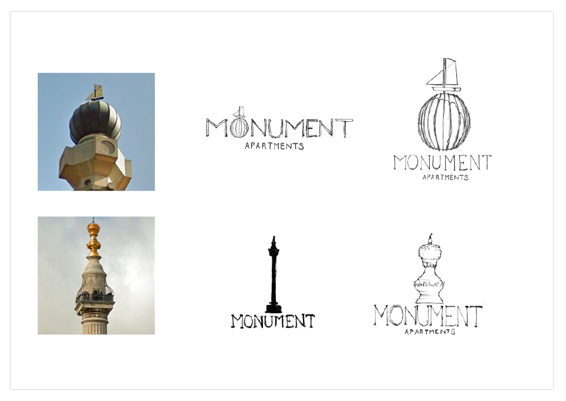
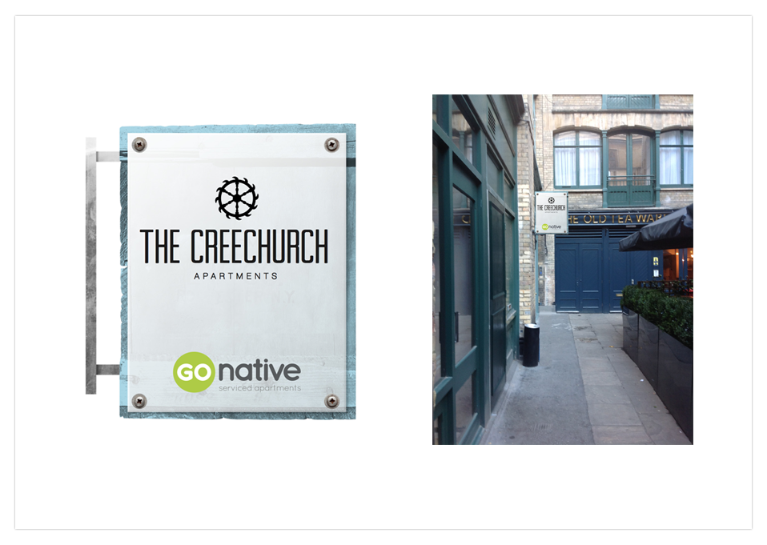
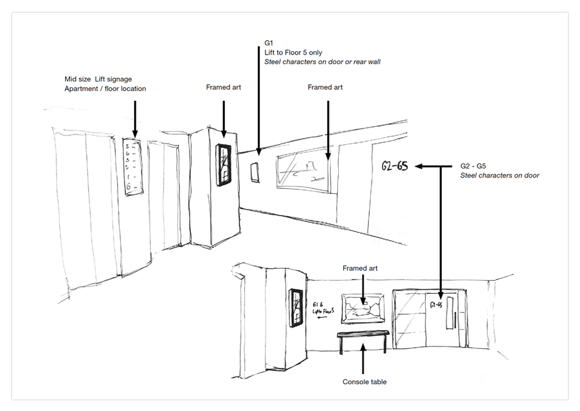
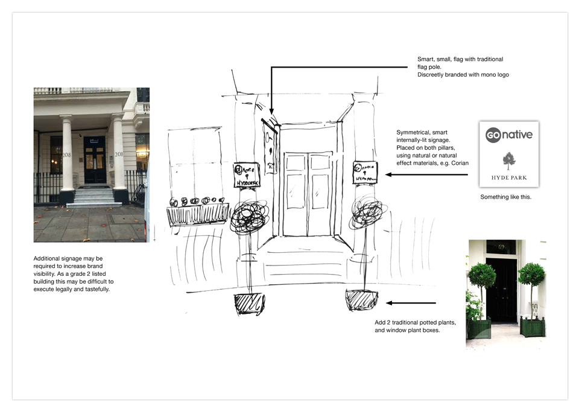
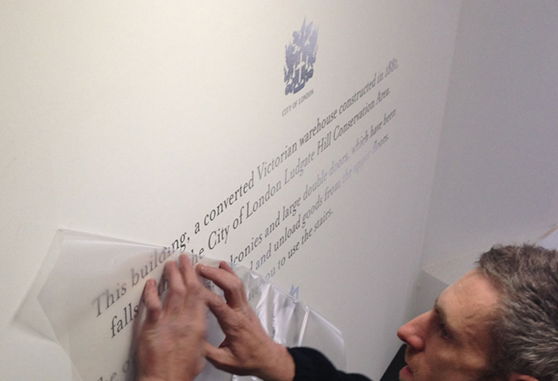

The UK's largest boutique Serviced Apartment operator.
As part of a integrated rebrand project, increase street level brand awareness and visibility, improve the guest experience through way-finding, and incorporate the research findings.
After conducting extensive research into each building’s heritage, architecture, and local area history, I created a unique emblem for each property, and proposed concepts for external and internal signage. Threading this content into bespoke typographic and illustrative wall murals, I curated the lobby spaces to enrich the guest experience and lift the interiors.
External signs, plaques, way-finding, and information guides were successfully rolled out across the portfolio, elevating Go Native above the competition, and cementing them as part of the fabric of the community. Project management included site visits, conceptual designs, planning applications, supplier liaison, artwork production and installation supervision.